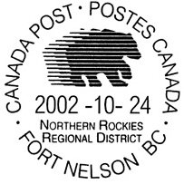

Fort Nelson PO pictorial cancel
Northern Rockies Regional District
- Status
- Expired
- Run dates
- 2002-01-01 to ?
- Design
- "NORTHERN ROCKIES REGIONAL DISTRICT"; bear
- Ink colour
- Black
- Designer
- Unknown
- Post office
- Fort Nelson PO
5007 Airport Dr
Fort Nelson, BC
V0C 1R0 - Subjects
- animal, mammal, bear, wildlife
This cancel is retired, so the post office can no longer apply it. Covers with it turn up from dealers and other collectors.
 Charlie Lake POFish
Charlie Lake POFish Terrace STN MainGoat
Terrace STN MainGoat Logan Lake POTrees, lake, fishes, farm, machinery, clouds
Logan Lake POTrees, lake, fishes, farm, machinery, clouds